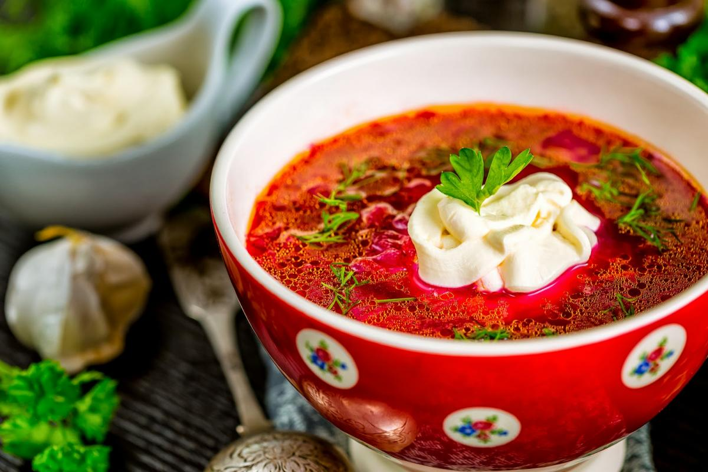
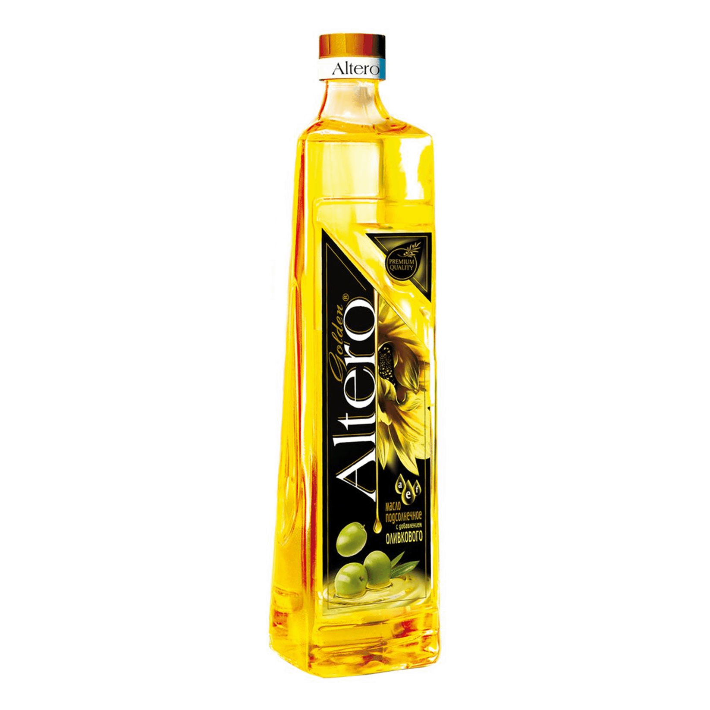
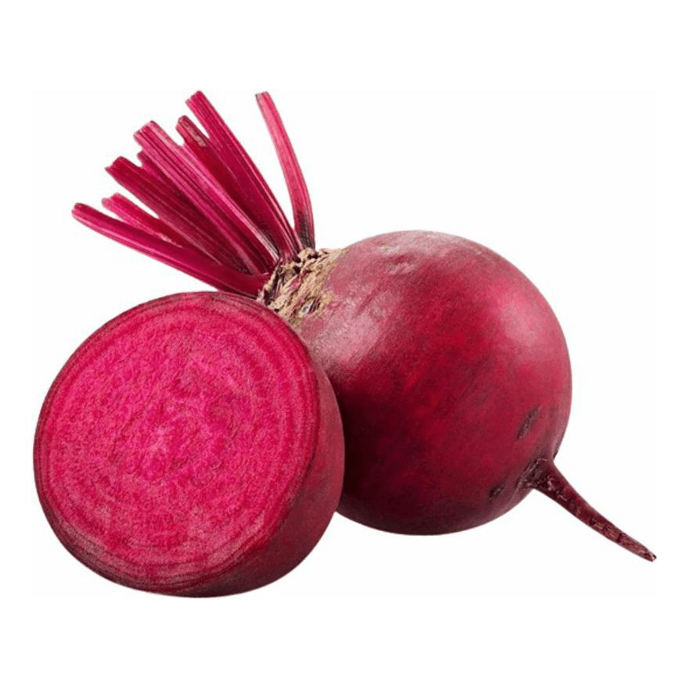
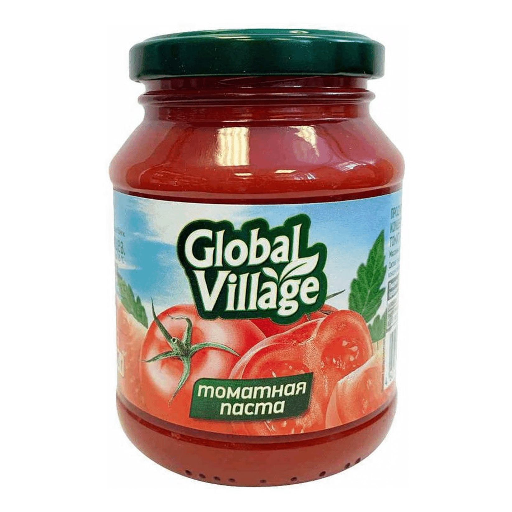
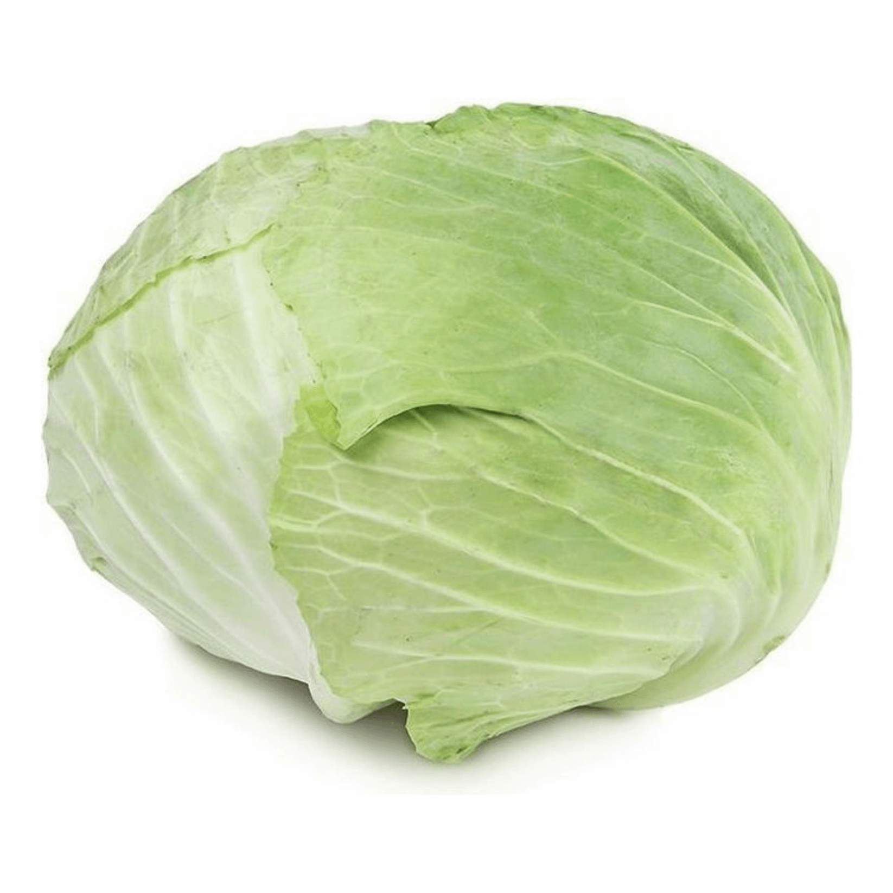
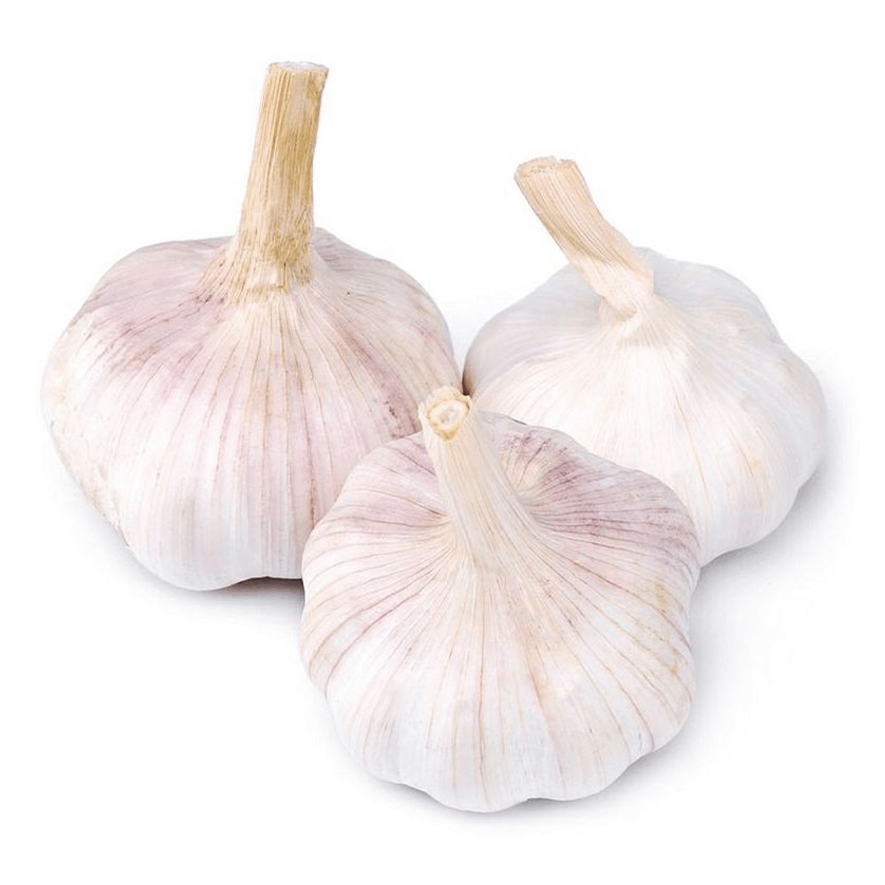
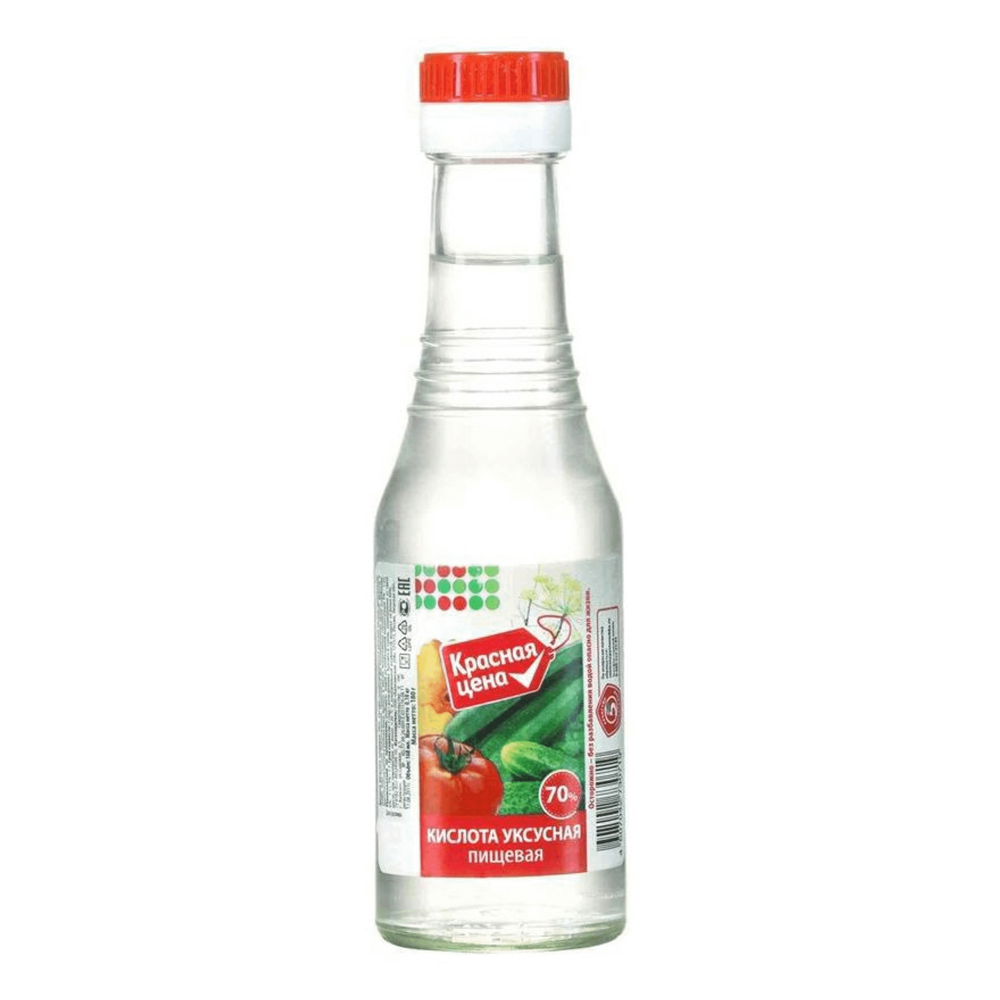

Налить воду и положить мясо. Варить в мультиварке или в кастрюле1,20 час двадцать. Порезать картошку, лук. Пошинковать свеклу, капусту, морковь. Мясо сварилось, отделить от костей. Если вода выкепела, то долить, посолить и поперчить. Все переложить в кастрюлю, опустить картошку. Как картошка готова, положить капусту. Как готова капуста положить 2 ст.л уксуса. Это для кислинки кто любит, можно не ложить.Отдельно потушить и поджарить в сковороде лук, морковь, свеклу. Добавить в поджарку томат пасту и чеснок. Все соеденить. Прокепятить 2-3 минуты и выключить. Борщ вкусный готов!!!
Масло подсолнечное  Свекла  Томатная паста 
Капуста Чеснок  Уксусная кислота 
| Продукт | Мера | Вес,гр | Бел,гр | Жир,гр | Углеводы,гр | Кал, ккал |
|---|---|---|---|---|---|---|
| Вода | 3л | 3000 | 0 | 0 | 0 | 0 |
| Картофель | 498гр | 498 | 9.96 | 1.99 | 90.14 | 398 |
| Телячья мякоть | 477гр | 35 | 235 | 65 | 65 | 23 |
| лук репчатый | 333 | 324 | 2 | 5 | 6 | 45 |
| морковь | 44 | 43 | 12 | 62 | 36 | 263 |
| свекла | 444 | 35 | 35 | 67 | 76 | 67 |
| масло подсолнечное | 55 | 67 | 76 | 98 | 34 | 45 |
| томатная паста | 547 | 74 | 45 | 45 | 87 | 5 |
| капуста белокочанная | 555 | 57 | 76 | 66 | 67 | 42 |
| чеснок | 12 | 15 | 16 | 11 | 136 | 12 |
| уксус 70% | 1 | 2 | 1 | 1 | 1 | 1 |
| Итого | 6555 | 45 | 667 | 45 | 43 | 22 |
| 1 порция | 35 | 76 | 698 | 65 | 55 | 56 |
| 100 грамм | 56 | 67 | 6 | 6 | 6 | 8 |